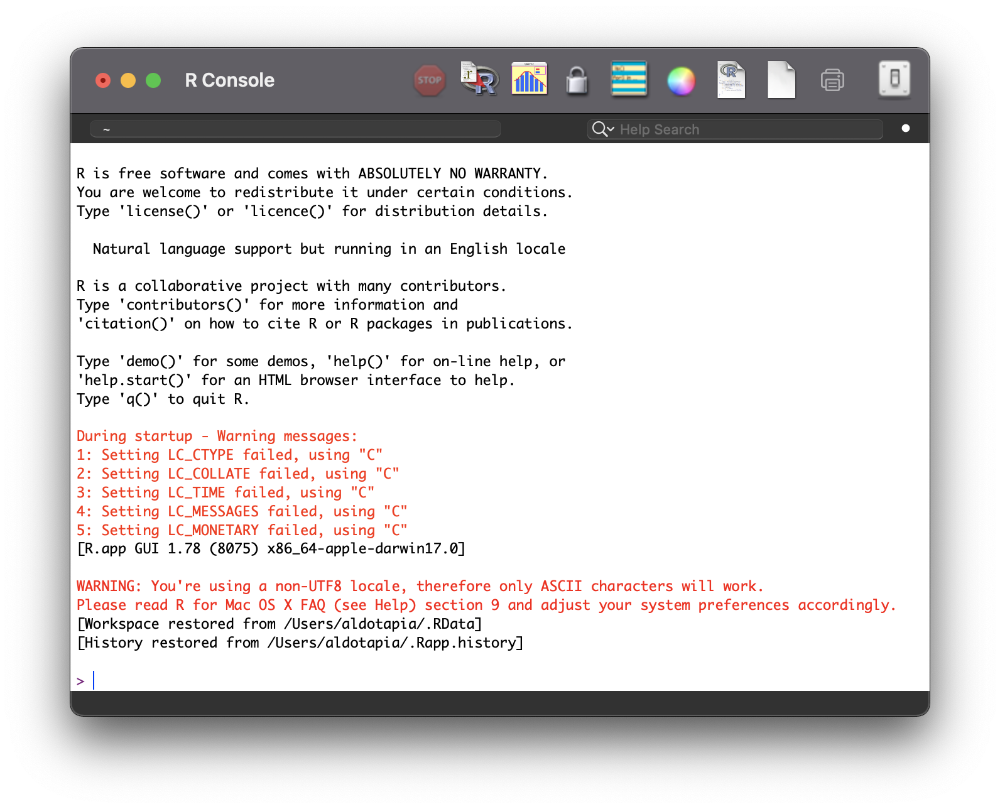
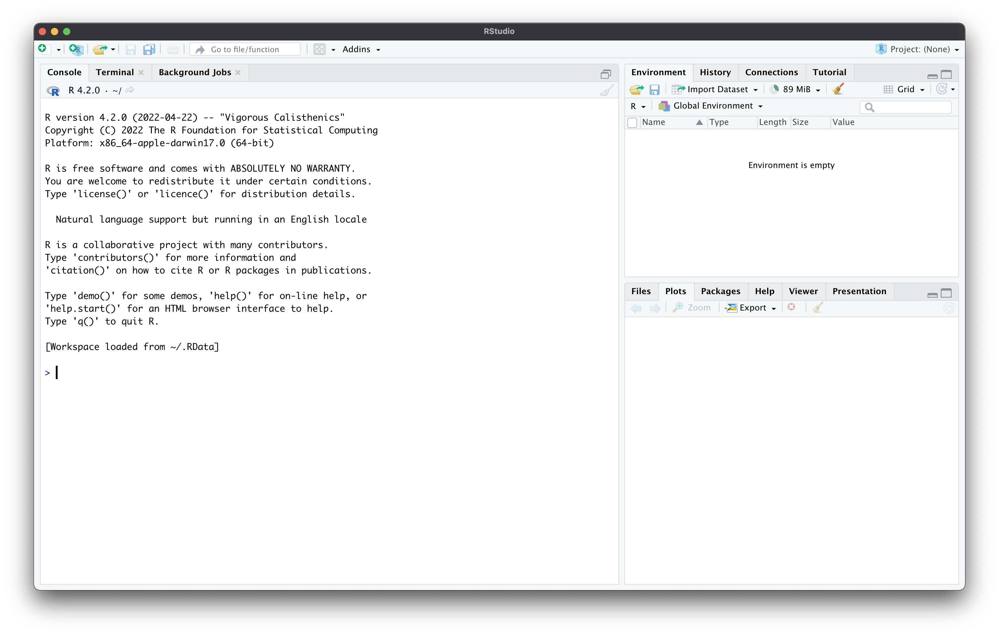

Introducción a R
Aldo Tapia

¿Qué es R?
R es un lenguaje de programación enfocado en el análisis estadístico. Proviene de otro lenguaje denominado S. R también es un software libre (licencia GNU-GP).
Es utilizado para minería de datos, machine learning, bioinformática, finanzas, geoanálisis, etc.
El paradigma de programación de este lenguaje es principalmente funcional.

¿Cómo instalar R?
Para instalar R hay que dirigirse a la siguiente página:
Los sistemas operativos soportados son:
Windows
MacOS
Linux (Debian, Fedora/Redhat, Ubuntu)
Interfaz gráfica
Entorno de desarrollo integrado
El Entorno de Desarrollo Integrado (o IDE por sus siglas en inglés) es una aplicación o software que provee las herramientas esenciales para facilitar al desarrollador o programador escribir el código de una rutina o programa.
En general, posee más herramientas que el editor de código que viene incluido por defecto en cada lenguaje de programación (algunos lenguajes no incluyen un software asociado, sí un compilador).
RStudio (POSIT desde octubre 2022)
RStudio es el IDE más utilizado por usuarios de R. Posee herramientas de visualización y exploración de datos que lo hace ideal para la explotación de este lenguaje con énfasis en la ciencia de datos.
Para la descarga, se debe acceder a https://www.rstudio.com/products/rstudio/ y descargar la versión Open Source.
Interfaz gráfica de RStudio

Esta sección posee visualizador de archivos en carpetas, gráficos, ayuda, entre otras cosas
Los datos generados e importados aparecen aquí.
Misma consola que el software R, también se pueden crear scripts y ejecutar el código línea a línea.
R como calculadora
Suma:
Multiplicación:
Módulo:
R como calculadora
Suma:
Multiplicación:
Módulo:
R como calculadora
Suma:
Multiplicación:
Módulo:
R como calculadora
Suma:
Multiplicación:
Módulo:
Operadores aritméticos en R
| Operador | Operación | Ejemplo |
|---|---|---|
| + | Suma | 1 + 2 = 3 |
| - | Resta | 2 - 1 = 1 |
| * | Multiplicación | 2 * 3 = 6 |
| / | División | 7 / 3 = 2.333 |
| %/% | División entera | 7 %/% 3 = 2 |
| ^ | Exponente | 2 ^ 3 = 8 |
| %% | Modulo (remanente) | 7 %% 2 = 1 |
Operadores relacionales en R
| Operador | Descripción |
|---|---|
| < | Menor que |
| > | Mayor que |
| <= | Menor o igual que |
| >= | Mayor o igual que |
| == | Igual que |
| != | No igual que |
Resultado booleano: TRUE (verdadero, equivalente a 1) o FALSE (falso, equivalente a 0)
Operadores relacionales en acción
Operadores relacionales en acción
Operadores relacionales en acción
Operadores relacionales en acción
Operadores relacionales en acción
Operadores relacionales en acción
- No se utiliza el símbolo
=para evaluaciones relacionales. Ese símbolo está reservado para la asignación de objetos (ya lo veremos).
Operadores lógicos en R
| Operador | Descripción |
|---|---|
| ! | NO lógico |
| & | Y lógico por elemento |
| && | Y lógico |
| | | O lógico por elemento |
| || | O lógico |
Operadores lógicos en acción
Operadores lógicos en acción
Operadores lógicos en acción
Operadores lógicos en acción
&&y||devuelven la operación lógica correspondiente al primer elemento. Ya que aún no vemos elementos múltiples, aún no lo analizaremos.
Operadores de asignación
| Operador | Descripción |
|---|---|
| <-, =, <<- | Asignación hacia la izquierda |
| ->, ->> | Asignación hacia la derecha |
Los operadores <- y = son los más utilizados. El uso de estos operadores es para asignar un valor a un objeto. Por ejemplo:
Creación de objetos
Un objeto puede contener un valor, una cadena de valores u otro tipo de elemento. Hay normas a seguir en la creación de objetos, las cuales son:
Los objetos pueden tener cualquier nombre, desde
xanombre_de_objeto_largo.Hay nombres que no se pueden utilizar (nombres reservados), ya que son asignados a una función (como
if,else,repeat,while,TRUE,FALSE,NULL, etc).Los nombres de los objetos deben ser explícitos y no muy largos para escribir un código ordenado.
Creación de objetos
Los nombres no pueden comenzar con números.
Se recomienda evitar el uso de puntuación en el nombre (como
variable.uno).Se recomienda el uso de adjetivos para variables y verbos para funciones.
Los nombres son sensibles a mayúsculas, no es lo mismo
temperaturaaTemperatura.Hay que ser consistente en el estilo usado (hay libertad para elegir su propia forma de escribir).
Ejemplos de asignación de objetos
Los objetos quedan alojados en la memoria de R, permitiendo interactuar entre objetos, variables no asignadas, funciones, etc.
Ejemplos de asignación de objetos
Los objetos quedan alojados en la memoria de R, permitiendo interactuar entre objetos, variables no asignadas, funciones, etc.
Funciones
Las funciones son códigos pre-definidos que automatizan una serie de operaciones con un objetivo en particular, resultando un producto al aplicar la función.
La función sqrt(x) calcula la raíz cuadrada de x. Para entender que valores puede tener x hay que consultar la documentación de la función anteponiendo ? al nombre de la función, por ejemplo: ?sqrt
Funciones
Miscellaneous Mathematical Functions
Description
`abs(x)` computes the absolute value of x, `sqrt(x)` computes the (principal) square root of x, √x$. The naming follows the standard for computer languages such as C or Fortran.Usage
abs(x) sqrt(x)Arguments
`x` a numeric or `complex` vector or array.
Creación de funciones
Las funciones pueden ser creadas utilizando la función function() e incorporando los argumentos necesarios dentro del paréntesis. Para abrir y cerrar las operaciones que ejecuta la función se utilizan paréntesis de llave:
Los argumentos de la función sumar son x e y. En este caso se asigna a a x y b a y. Siempre el argumento va a la izquierda y el parámetro a la derecha.
Creación de funciones
Si los argumentos de la función están mal ingresados, R arrojará un error
Error in sumar(a = x, b = y) : unused arguments (a = x, b = y)
Eso sí, los argumentos están puestos en un orden predeterminado (el que nosotros elegimos al crear la función). Se puede omitir señalar el nombre del argumento y asignar el valor en base a la posición:
Tipos de datos
Existe esencialmente tres tipos de datos: numéricos (entero, dobles, complejos), cadena de caracteres y lógicos.
Las cadenas de caracteres se definen incluyendo comillas simples o dobles a caracteres alfanuméricos. Por ejemplo:
Vectores
Los vectores son una colección de valores del mismo tipo de dato. Para crear un vector se utiliza la función combinar (c()):
Vectores
Si se combinan dos o más tipos de datos, se transforman al tipo que predomina:
[1] "enero" "5" "marzo" "abril"[1] 10 1 6 4 2[1] "TRUE" "febrero" "TRUE" "TRUE" En términos de importancia es cadena de caracteres > numérico > lógico.
Los lógicos si están entre números son convertidos a
1(TRUE) o0(FALSE). Si hay una cadena, son todos convertidos a ese tipo.
Valores perdidos
Si hay algún valor perdido en una serie de valores, este es representado por un NA. Ese valor perdido está utilizando un espacio dentro del vector, incluso hará fallar algunas funciones. Hay que considerar tratar o suprimir estos datos:
El argumento na.rm remueve los NA en el cálculo y por defecto está apagado (FALSE). Solo basta con encenderlo con el valor TRUE
El dataframe
Si los vectores son objetos unidimensionales, los dataframe son objetos bidimensionales (tablas tabulares o rectangulares). Son similares a las tablas de una hoja de cálculo.
El dataframe se compone de un compendio de vectores de igual longitud. Cada uno de esos vectores poseen un único tipo de dato. Un dataframe puede contener vectores de diferentes tipos de datos.
Cada vector representa una columna, cada elemento dentro del vector representa una fila.
Creación de un dataframe
Para crear un dataframe sólo es necesario utilizar la función data.frame() y añadir tantos vectores se deseen dentro de los paréntesis:
Matriz
La matriz es otro objeto bidimensional. La diferencia es que sólo puede poseer valores numéricos y en su defecto, NAs. Para crear una matriz se utiliza la función matrix():
Posee argumentos para poder armar la matriz de forma diferente:
La lista
La lista es un tipo de variable que permite guardar cualquier tipo de objeto en su interior. Es muy útil para ir almacenando información cuando se debe realizar un mismo procedimiento una y otra vez. Es como un gran almacen lleno de casilleros
Para crearla se utiliza la función list():
No es necesario ingresar los objetos a almacenar inmediatamente, se pueden ir depositando a medida que sea necesario.
Seleccionando elementos
Para seleccionar elementos dentro de un vector se utiliza la forma nombre[posición]; de un dataframe o matriz, nombre[fila,columna]; de una lista, nombre[[posición]]:
Selección extendida en dataframes
Si se desea seleccionar una columna completa se utiliza la forma nombre$columna. También, se pueden filtrar las observaciones con vectores lógicos:
Asignación dentro de una lista
Para asignar objetos o variables dentro de una lista, se debe utilizar la forma de selección para abrir el casillero de la lista utilizando el vector de asignación para registrar el objeto (esto también es válido para vectores, dataframes, matrices, etc)
Control de flujo
Existen varios tipos de estructura para controlar las instrucciones que ejecuta un código, estas se denominan estructuras control de flujo. El flujo de un código es la manera en la cual se ejecuta cada una de las instrucciones desde principio a final.
Este tipo de estructura permite establecer reglas, como: si pasa esto, realiza tal tarea, sino continua; repite estas instrucciones n cantidad de veces; mientras esto ocurra, realiza lo siguiente; entre otras.
if
Si se cumple una condición, ejecuta lo que indica el cuerpo de la instrucción if
En códido de R se requiere usar el operador if acompañado de un paréntesis (donde se incorpora el evaluador) y seguido de un paréntesis de llave, donde se alojará el cuerpo de if si la prueba es positiva.
Si la evaluación da como resultado un FALSE, no se ejecuta el cuerpo de if
if else
Si no se cumple la condición de if, se ejecuta el cuerpo de else.
Para este caso, al final del paréntesis de llave se agrega else y otro paréntesis de llave donde al interior se incluye el cuerpo de else
for
El operador for ejecuta el código del cuerpo para cada uno de los elementos de entrada a evaluar.
Por ejemplo, si el elemento de entrada es un vector numérico, evaluará cada uno de las posiciones de ese vector
while
El operador while evalua una expresión lógica y repite el código mientras la expresión sea FALSE. Se debe tener cuidado ya que si la expresión lógica no cambia pueda que se entre en un bucle infinito.
Se recomienda incluir un modificador del objeto a evaluar dentro del cuerpo de while para programar cuando debe terminar el bucle.
Otros operadores
Otros operadores que permiten controlar aún más el flujo del código dentro de un bucle, son break, continue y repeat. El primero rompe un bucle; el segundo, permite que continúe el bucle; y el último es equivalente a while(TRUE)
Comentarios
Los comentarios en R se incluyen con el símbolo ‘#’. Todo lo que esté a la derecha de este símbolo no se ejecutará ni afectará la ejecución de las líneas siguientes.
SIG y Teledetección